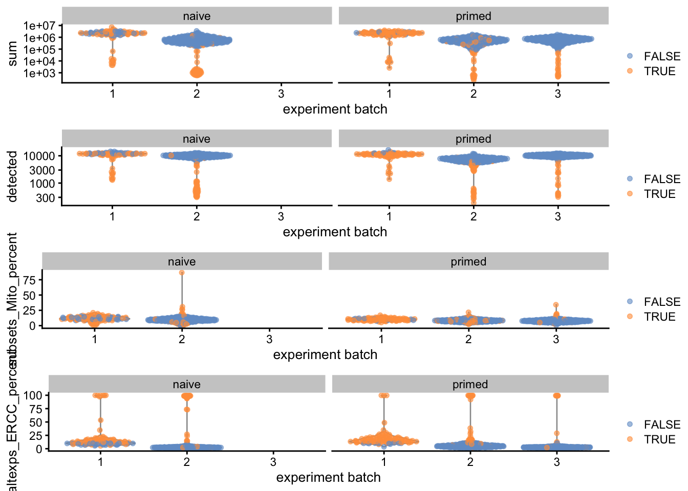
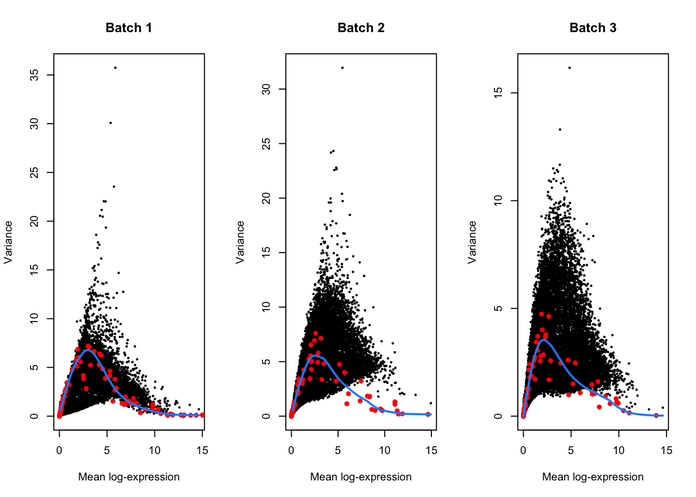

title: Analysis of the human embryonic stem cell (hESC) dataset generated with Smart-seq2 using Bioconductor package simple SingleCellExperiment Author: Saifun Nahar, Mohammad Suleman, Arman Moshasha bibliography: references.bib format: gfm: output-file: README.md execute: echo: false eval: true revealjs: slide-level: 4 execute: echo: false eval: true
Introduction
Smart-seq2 is the sequencing method used for the Messmer human embryonic stem cell (hESC) dataset. The analysis is performed using the Bioconductor package simple SingleCellExperiment, which is designed for handling single-cell RNA sequencing data. The workflow includes several steps such as data preprocessing, quality control, normalization, dimensionality reduction, clustering, and differential expression analysis. The goal of the analysis is to identify distinct cell populations and understand their gene expression profiles in the context of human embryonic stem cells.
Data loading
The dataset is loaded into R using the readRDS function, which reads the serialized R object containing the single-cell data. The data is stored in a SingleCellExperiment object, which allows for efficient handling and analysis of single-cell RNA-seq data. The dataset includes information about the experiment batch and phenotype of the cells, which will be used for downstream analyses.
The following objects are masked from 'package:base':
expand.grid, I, unname
Loading required package: IRanges
Loading required package: GenomeInfoDb
Loading required package: Biobase
Welcome to Bioconductor
Vignettes contain introductory material; view with
'browseVignettes()'. To cite Bioconductor, see
'citation("Biobase")', and for packages 'citation("pkgname")'.
Attaching package: 'Biobase'
The following object is masked from 'package:MatrixGenerics':
rowMedians
The following objects are masked from 'package:matrixStats':
anyMissing, rowMedians
sce.mess <-MessmerESCData()
snapshotDate(): 2022-10-31
see ?scRNAseq and browseVignettes('scRNAseq') for documentation
loading from cache
see ?scRNAseq and browseVignettes('scRNAseq') for documentation
loading from cache
see ?scRNAseq and browseVignettes('scRNAseq') for documentation
loading from cache
snapshotDate(): 2022-10-31
see ?scRNAseq and browseVignettes('scRNAseq') for documentation
The following object is masked from 'package:Biobase':
cache
ens.hs.v97 <-AnnotationHub()[["AH73881"]]
snapshotDate(): 2022-10-31
loading from cache
anno <-select(ens.hs.v97, keys=rownames(sce.mess), keytype="GENEID", columns=c("SYMBOL"))rowData(sce.mess) <- anno[match(rownames(sce.mess), anno$GENEID),]
Quality control
Quality control is performed to filter out low-quality cells and genes. This typically involves calculating metrics such as the number of detected genes, total counts per cell, and the percentage of mitochondrial gene expression. Cells that do not meet certain thresholds for these metrics are removed from the analysis to ensure that only high-quality data is used for downstream analysis.
Warning: `aes_string()` was deprecated in ggplot2 3.0.0.
ℹ Please use tidy evaluation idioms with `aes()`.
ℹ See also `vignette("ggplot2-in-packages")` for more information.
ℹ The deprecated feature was likely used in the scater package.
Please report the issue at <https://support.bioconductor.org/>.

Normalization
Normalization is performed to account for differences in sequencing depth and other technical variations across cells. This step typically involves scaling the counts to a common library size and applying a transformation to stabilize the variance. Normalization allows for more accurate comparisons of gene expression levels across cells and is essential for downstream analyses such as clustering and differential expression.
Cell cycle phase assignment is performed to classify cells into different phases of the cell cycle (G1, S, G2/M) based on the expression of known cell cycle marker genes. This can provide insights into the proliferative state of the cells and help to identify potential sources of variation in gene expression that are related to cell cycle effects.
Feature selection is performed to identify highly variable genes that are informative for downstream analyses such as clustering and dimensionality reduction. This typically involves calculating the variance of gene expression across cells and selecting genes that exhibit higher variability than expected based on their mean expression levels. The selected genes are then used for subsequent analyses to capture the biological heterogeneity in the dataset.
dec <-modelGeneVarWithSpikes(sce.mess, "ERCC", block = sce.mess$`experiment batch`)top.hvgs <-getTopHVGs(dec, prop =0.1)par(mfrow=c(1,3))for (i inseq_along(dec$per.block)) { current <- dec$per.block[[i]]plot(current$mean, current$total, xlab="Mean log-expression", ylab="Variance", pch=16, cex=0.5, main=paste("Batch", i)) fit <-metadata(current)points(fit$mean, fit$var, col="red", pch=16)curve(fit$trend(x), col='dodgerblue', add=TRUE, lwd=2)}

Batch correction
Batch correction is performed to remove technical variations that arise from differences in experimental conditions or processing batches. This step is crucial for integrating data from multiple batches and ensuring that the observed biological differences are not confounded by batch effects. Methods such as ComBat, MNN (Mutual Nearest Neighbors), or Harmony can be used for batch correction, which adjust the gene expression values to mitigate the influence of batch-specific biases.
Dimensionality reduction techniques such as Principal Component Analysis (PCA) and t-distributed Stochastic Neighbor Embedding (t-SNE) are applied to the normalized data to visualize the high-dimensional gene expression data in a lower-dimensional space. This helps to identify patterns and clusters of cells based on their gene expression profiles. PCA reduces the dimensionality by finding the directions of maximum variance in the data, while t-SNE focuses on preserving local relationships between cells.
Warning: useNames = NA is deprecated. Instead, specify either useNames = TRUE
or useNames = TRUE.
Warning: useNames = NA is deprecated. Instead, specify either useNames = TRUE
or useNames = TRUE.
Warning: useNames = NA is deprecated. Instead, specify either useNames = TRUE
or useNames = TRUE.
Warning: useNames = NA is deprecated. Instead, specify either useNames = TRUE
or useNames = TRUE.
Warning: useNames = NA is deprecated. Instead, specify either useNames = TRUE
or useNames = TRUE.
Warning: useNames = NA is deprecated. Instead, specify either useNames = TRUE
or useNames = TRUE.
Warning: useNames = NA is deprecated. Instead, specify either useNames = TRUE
or useNames = TRUE.
From a naive PCA, the cell cycle appears to be a major source of biological variation within each phenotype. To mitigate this, we can regress out the cell cycle scores from the PCA.
We perform contrastive PCA (cPCA) and sparse cPCA (scPCA) on the corrected log-expression data to obtain the same number of PCs. Given that the naive hESCs are actually reprogrammed primed hESCs, we will use the single batch of primed-only hESCs as the “background” dataset to remove the cell cycle effect.
Messmer, T., F. von Meyenn, A. Savino, F. Santos, H. Mohammed, A. T. L. Lun, J. C. Marioni, and W. Reik. 2019. “Transcriptional heterogeneity in naive and primed human pluripotent stem cells at single-cell resolution.” Cell Rep 26 (4): 815–24.